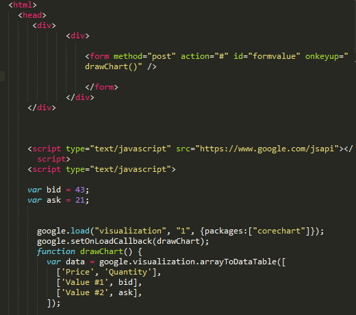

The Web Up Close
Making the Web Interactive
Watch & Learn
- JavaScript in 100 Seconds (Fireship, 2 min)
- What is JavaScript? (Programming with Mosh, 5 min)
- Learn DOM Manipulation In 18 Minutes (Web Dev Simplified, 18 min)
- Learn JavaScript Event Listeners In 18 Minutes (Web Dev Simplified, 18 min)
Video Quiz
In the Fireship “JavaScript in 100 Seconds” video, what does Fireship say JavaScript was originally created to do?
In the Programming with Mosh “What is JavaScript?” video, what example does Mosh use to show JavaScript changing a page in real time?
In the Web Dev Simplified “Learn DOM Manipulation” video, which method does Kyle say is the most common way to select a single element by its CSS selector?
In the Web Dev Simplified “Learn DOM Manipulation” video, what method does Kyle demonstrate for creating a brand-new HTML element with JavaScript?
In the Web Dev Simplified “Learn JavaScript Event Listeners” video, what does Kyle say is the difference between addEventListener and using an onclick attribute?
In the Fireship “JavaScript in 100 Seconds” video, which runtime does Fireship mention that allows JavaScript to run outside the browser on a server?
Theory
What JavaScript Does in the Browser
HTML gives a web page its structure, and CSS controls how it looks. But neither can react to what a visitor does. That’s where JavaScript comes in — it is the programming language of the web, and it lets pages respond to clicks, key presses, scrolling, timers, and much more.
Every modern browser ships with a built-in JavaScript engine (Chrome uses V8, Firefox uses SpiderMonkey). When a page loads, the engine reads and executes any JavaScript it finds. That code can change text, swap images, show or hide sections, validate forms, fetch new data from a server without reloading — basically anything that makes a website feel alive rather than static.
JavaScript was created in just ten days in 1995 by Brendan Eich at Netscape. Despite the name, it has almost nothing to do with Java — the similar name was a marketing decision. Today JavaScript is standardized as ECMAScript and has grown far beyond the browser: Node.js lets it run on servers, and frameworks like React and Vue power some of the biggest apps on the planet.
Variables, Functions, and Events
A variable
is a named container that stores a value. In modern JavaScript you declare one with
let or const:
let score = 0;
const maxLives = 3;
let means the value can change later; const means it stays the same.
A function is a reusable block of code that runs when you call it:
function greet(name) {
return "Hello, " + name + "!";
}
greet("Alex"); // "Hello, Alex!"An event is something that happens in the browser — a click, a key press, a page finishing its load. You can tell JavaScript to listen for a specific event and run a function when it fires:
const btn = document.querySelector("#myButton");
btn.addEventListener("click", function () {
alert("You clicked the button!");
});This pattern — select an element, attach a listener, run a function — is the heart of almost every interactive feature on the web.

Document Object Model: Changing the Page Dynamically
When the browser loads an HTML file, it builds an in-memory tree called the
Document Object Model
(DOM). Every tag becomes a node
in that tree — the <html> element sits at the top, and every paragraph, image, and
link branches off below it.
JavaScript can read and change any node in the DOM. Here are the most common operations:
- Find an element —
document.querySelector(".card") - Change its text —
element.textContent = "New text" - Change its style —
element.style.color = "red" - Add or remove a CSS class —
element.classList.toggle("hidden") - Create a new element —
document.createElement("p") - Insert it into the page —
parent.appendChild(newElement) - Remove an element —
element.remove()
Because the DOM is live, changes you make in JavaScript are reflected on screen instantly. That’s how a “Show more” button can reveal hidden text, or a dark-mode toggle can flip every color on the page — all without reloading.

When JavaScript Runs: Script Loading and Execution
Where you place a <script> tag in your HTML matters. By default, when the browser
encounters a script, it pauses
parsing the rest of the
page, downloads the script file, and executes it immediately. If the script is in the
<head> and tries to find a button that hasn’t been created yet, it will fail —
the element simply doesn’t exist in the DOM at that point.
The simplest fix: put your <script> tags right before the closing
</body> tag. By that time the browser has already built every element, so your code
can find and manipulate them without problems.
Two other approaches are the defer and async
attributes:
<script src="app.js" defer>— the browser downloads the file in the background and runs it only after the page has finished parsing. This is the most common choice for scripts that interact with the DOM.<script src="analytics.js" async>— the browser downloads and runs the script as soon as it can, without waiting for the page to finish. Good for independent scripts like analytics trackers that don’t need to touch page elements.
Understanding the difference between defer and async helps you avoid the
frustrating “cannot read properties of null” error that every beginner encounters sooner or later.
Theory Quiz
What is the main purpose of JavaScript on a web page?
What is the difference between let and const in JavaScript?
What is the DOM?
Why is it safest to place <script> tags just before </body>?
What does element.classList.toggle("hidden") do?
Build: Interactive “About Me” Page
Take the “About Me” page you built in earlier lessons and add real interactivity with JavaScript. Your goal is to implement three features:
-
A dark/light mode toggle button. When clicked, it should swap the page’s background and text colors
by toggling a CSS class (for example,
.dark-mode) on the<body>element. The button text should update to show the current state (“Switch to Dark Mode” / “Switch to Light Mode”). -
A character counter on a
<textarea>in your page’s contact form. As the user types, a line below the field should display how many characters they have entered out of a maximum (for example, “42 / 200”). If they hit the limit, the counter should turn red. -
A “Show more” button that reveals a hidden paragraph about one of your hobbies. Clicking it
should remove the
hiddenclass from the paragraph and change the button text to “Show less.” Clicking again should re-hide it.
Requirements:
- Use
addEventListener— no inlineonclickattributes in your HTML - Use
classList.toggle()orclassList.add()/classList.remove() - Keep your JavaScript in a
<script>tag before</body> - Add CSS rules for
.dark-modethat invert the color scheme - The character counter should update on every keystroke (use the
inputevent)
Solve it in JSFiddle:
Open JSFiddlePaste your HTML into the HTML panel, CSS into the CSS panel, and JS into the JavaScript panel. Click “Run” to see the result!